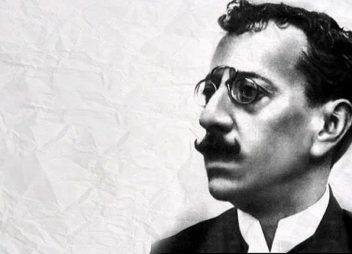

Olavo Bilac

Considerado um dos maiores poetas do parnasianismo, Olavo Bilac foi um escritor e jornalista nascido no Rio de Janeiro. Lembrado muitas vezes pelos seus sonetos de amor (mágico e idealizado), a produção literária de Bilac foi múltipla e cobriu diversas temáticas.
Por exemplo, o autor escreveu várias obras destinadas ao público infantil. Outra característica da sua poesia é o fato de abordar a vida política e social brasileira, apelando à participação cívica, enquanto defensor dos ideais republicanos.Vale a pena referir que o poeta também foi o criador da letra do Hino à Bandeira do Brasil, no ano de 1906.